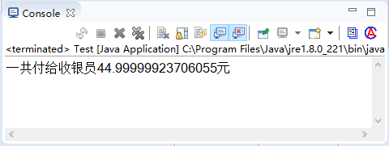
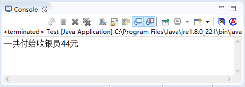

首页 > Java教程 > Java程序设计基础
Java数据类型转换：强制类型转换+自动类型转换
数据类型的转换是在所赋值的数值类型和被变量接收的数据类型不一致时发生的，它需要从一种数据类型转换成另一种数据类型。数据类型的转换可以分为隐式转换（自动类型转换）和显式转换（强制类型转换）两种。
当以上 2 个条件都满足时，拓宽转换（widening conversion）发生。例如 byte 类型向 short 类型转换时，由于 short 类型的取值范围较大，会自动将 byte 转换为 short 类型。
在运算过程中，由于不同的数据类型会转换成同一种数据类型，所以整型、浮点型以及字符型都可以参与混合运算。自动转换的规则是从低级类型数据转换成高级类型数据。转换规则如下：
以上数据类型的转换遵循从左到右的转换顺序，最终转换成表达式中表示范围最大的变量的数据类型。
程序执行结果如下图 1 所示：
从执行结果看出，float、int 和 double 三种数据类型参与运算，最后输出的结果为 double 类型的数据。这种转换一般称为“表达式中类型的自动提升”。
自动类型提升有好处，但它也会引起令人疑惑的编译错误。例如，下面看起来正确的程序却会引起问题：
该程序试图将一个完全合法的 byte 型的值 50*2 再存储给一个 byte 型的变量。但是当表达式求值的时候，操作数被自动的提升为 int 型，计算结果也被提升为 int 型。这样表达式的结果现在是 int 型，不强制转换它就不能被赋为 byte 型。确实如此，在这个特别的情况下，被赋的值将仍然适合目标类型。
所以应该使用一个显示的强制类型转换，例如：
注意：char 类型比较特殊，char 自动转换成 int、long、float 和 double，但 byte 和 short 不能自动转换为 char，而且 char 也不能自动转换为 byte 或 short。
这种转换不会自动进行，因为 double 型的变化范围比 int 型的要小。这种转换有使成为“缩小转换”，因为你肯定要将源数据类型的值变小才能适合目标数据类型。
所以当两种数据类型不兼容，或目标类型的取值范围小于源类型时，自动转换将无法进行，这时就需要进行强制类型转换。其语法格式如下：
在强制类型转换中，如果是将浮点类型的值转换为整数，直接去掉小数点后边的所有数字；而如果是整数类型强制转换为浮点类型时，将在小数点后面补零。
程序执行结果如下图 2 所示：
隐式转换（自动类型转换）
如果以下 2 个条件都满足，那么将一种类型的数据赋给另外一种类型变量的时，将执行自动类型转换（automatic type conversion）。- 两种数据类型彼此兼容
- 目标类型的取值范围大于源数据类型（低级类型数据转换成高级类型数据）
当以上 2 个条件都满足时，拓宽转换（widening conversion）发生。例如 byte 类型向 short 类型转换时，由于 short 类型的取值范围较大，会自动将 byte 转换为 short 类型。
在运算过程中，由于不同的数据类型会转换成同一种数据类型，所以整型、浮点型以及字符型都可以参与混合运算。自动转换的规则是从低级类型数据转换成高级类型数据。转换规则如下：
- 数值型数据的转换：byte→short→int→long→float→double。
- 字符型转换为整型：char→int。
以上数据类型的转换遵循从左到右的转换顺序，最终转换成表达式中表示范围最大的变量的数据类型。
例 1
顾客到超市购物，购买牙膏 2 盒，面巾纸 4 盒。其中牙膏的价格是 10.9 元，面巾纸的价格是 5.8 元，求商品总价格。实现代码如下：
public static void main(String[] args) {
float price1 = 10.9f; // 定义牙膏的价格
double price2 = 5.8; // 定义面巾纸的价格
int num1 = 2; // 定义牙膏的数量
int num2 = 4; // 定义面巾纸的数量
double res = price1 * num1 + price2 * num2; // 计算总价
System.out.println("一共付给收银员" + res + "元"); // 输出总价
}
上述代码中首先定义了一个 float 类型的变量存储牙膏的价格，然后定义了一个 double 类型的变量存储面巾纸的价格，再定义两个 int 类型的变量存储物品的数量，最后进行了乘运算以及和运算之后，将结果储存在一个 double 类型的变量中进行输出。程序执行结果如下图 1 所示：

图 1 运行结果
图 1 运行结果
从执行结果看出，float、int 和 double 三种数据类型参与运算，最后输出的结果为 double 类型的数据。这种转换一般称为“表达式中类型的自动提升”。
自动类型提升有好处，但它也会引起令人疑惑的编译错误。例如，下面看起来正确的程序却会引起问题：
byte b = 50;
b = b * 2; // Type mismatch: cannot convert from int to byte
该程序试图将一个完全合法的 byte 型的值 50*2 再存储给一个 byte 型的变量。但是当表达式求值的时候，操作数被自动的提升为 int 型，计算结果也被提升为 int 型。这样表达式的结果现在是 int 型，不强制转换它就不能被赋为 byte 型。确实如此，在这个特别的情况下，被赋的值将仍然适合目标类型。
所以应该使用一个显示的强制类型转换，例如：
byte b = 50;
b = (byte)(b*2);
注意：char 类型比较特殊，char 自动转换成 int、long、float 和 double，但 byte 和 short 不能自动转换为 char，而且 char 也不能自动转换为 byte 或 short。
显式转换（强制类型转换）
尽管自动类型转换是很有帮助的，但并不能满足所有的编程需要。例如，如果你需要将 double 型的值赋给一个 int 型的变量，你将怎么办？这种转换不会自动进行，因为 double 型的变化范围比 int 型的要小。这种转换有使成为“缩小转换”，因为你肯定要将源数据类型的值变小才能适合目标数据类型。
所以当两种数据类型不兼容，或目标类型的取值范围小于源类型时，自动转换将无法进行，这时就需要进行强制类型转换。其语法格式如下：
(type)variableName其中，type 为 variableName 要转换成的数据类型，而 variableName 是指要进行类型转换的变量名称，强制转换的实例如下：
int a = 3; double b = 5.0; a = (int)b;上述代码中首先将 double 类型变量 b 的值强制转换成 int 类型，然后将值赋给 a，但是变量 b 本身的值是没有发生变化的。
在强制类型转换中，如果是将浮点类型的值转换为整数，直接去掉小数点后边的所有数字；而如果是整数类型强制转换为浮点类型时，将在小数点后面补零。
例 2
顾客到超市购物，购买牙膏 2 盒，面巾纸 4 盒。其中牙膏的价格是 10.9 元，面巾纸的价格是 5.8 元，求商品总价格，在计算总价时采用 int 类型的数据进行存储。实现代码如下：
public static void main(String[] args) {
float price1 = 10.9f;
double price2 = 5.8;
int num1 = 2;
int num2 = 4;
int res2 = (int) (price1 * num1 + price2 * num2);
System.out.println("一共付给收银员" + res2 + "元");
}
在上述实例中，有 double 类型、float 类型和 int 类型的数据参与运算，其运算结果默认为 double 类型，题目要求的结果为 int 类型，因为 int 类型的取值范围要小于 double 类型的取值范围，所以需要进行强制类型转换。程序执行结果如下图 2 所示：

图 2 运行结果
图 2 运行结果
关注公众号「站长严长生」，在手机上阅读所有教程，随时随地都能学习。内含一款搜索神器，免费下载全网书籍和视频。

微信扫码关注公众号